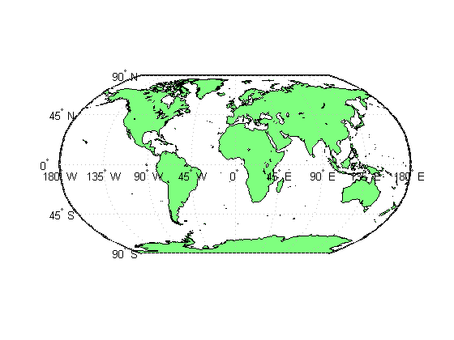
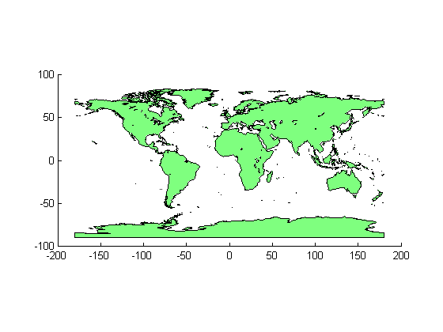
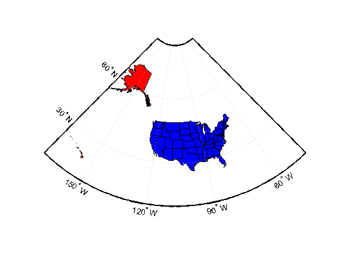
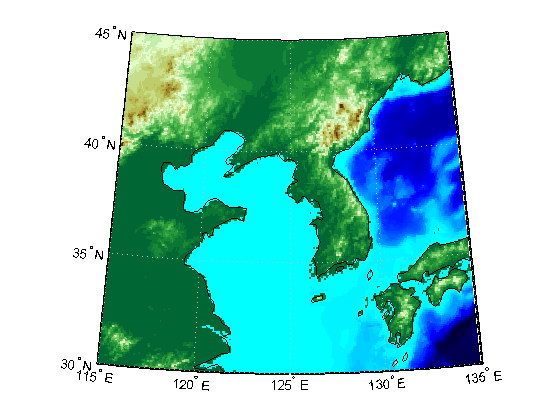
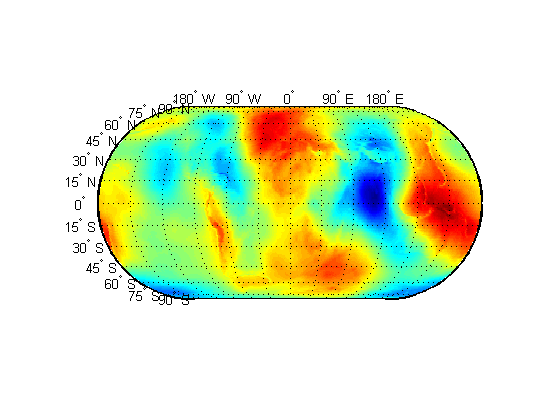
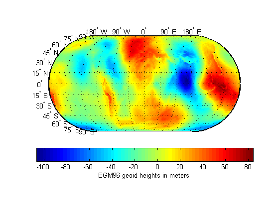
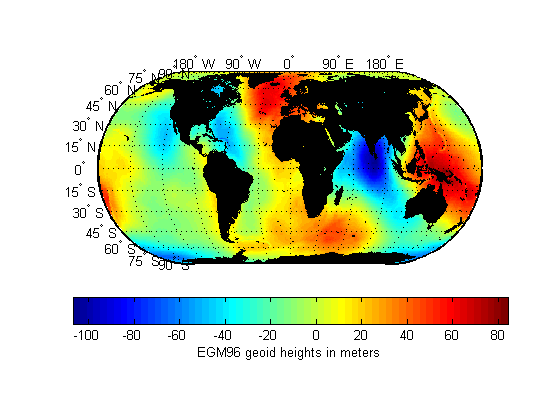
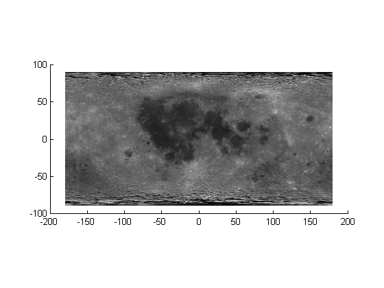
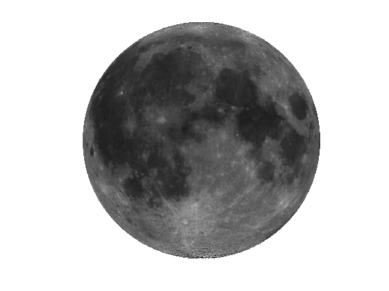

Creating Maps from Geographic (Latitude, Longitude) Data
This gallery illustrates the range of maps that you can create using geoshow.
Contents
Geographic map 1: World Land Area
Create a worldmap and project and display world land areas.
figure worldmap world geoshow('landareas.shp', 'FaceColor', [0.5 1.0 0.5]);
Project and display world land areas using a default Plate Carree projection.
figure geoshow('landareas.shp', 'FaceColor', [0.5 1.0 0.5]);
Note that the axes show positions in latitude and longitude but on an ordinary axes rather than a map axes.
ismap
ans =
0
Geographic map 2: North America with Custom Colored States in the U.S.
Read the USA high resolution data.
states = shaperead('usastatehi', 'UseGeoCoords', true);
Create a SymbolSpec to display Alaska and Hawaii as red polygons.
symbols = makesymbolspec('Polygon', ... {'Name', 'Alaska', 'FaceColor', 'red'}, ... {'Name', 'Hawaii', 'FaceColor', 'red'});
Create a worldmap of North America with Alaska and Hawaii in red, all other states in blue.
figure worldmap('na'); geoshow(states, 'SymbolSpec', symbols, ... 'DefaultFaceColor', 'blue', ... 'DefaultEdgeColor', 'black'); axis off
Geographic map 3: Korea Elevation Grid
Load the Korea data grid and the land area boundary.
load korea S = shaperead('landareas', 'UseGeoCoords', true);
Create a worldmap and project and display the Korea data grid as a texture map.
figure; worldmap(map, refvec) geoshow(map, refvec, 'DisplayType', 'texturemap'); demcmap(map) axis off
Overlay the land area boundary as a line.
geoshow([S.Lat], [S.Lon], 'Color', 'black');
Geographic map 4: EGM96 Geoid Heights
Project and display the EGM96 geoid heights as a texture map.
Create a figure with an Eckert projection and project and display the geoid heights as a texture map.
load geoid figure('Renderer','zbuffer') axesm eckert4; framem; gridm; plabel; mlabel('MlabelLocation',90); geoshow(geoid, geoidrefvec, 'DisplayType', 'texturemap'); axis off
Create a colorbar and a title.
hcb = colorbar('horiz'); set(get(hcb,'Xlabel'),'String','EGM96 geoid heights in meters')
Mask out all the land.
geoshow('landareas.shp', 'FaceColor', 'black');
Geographic map 5: Moon Albedo Image
Load the moon albedo image.
load moonalb
Project and display the moon albedo image using a default Plate Carree projection.
figure('Renderer', 'zbuffer'); geoshow(moonalb, moonalbrefvec)
Project and display the moon albedo image as a texturemap in an orthographic projection.
figure axesm ortho geoshow(moonalb, moonalbrefvec, 'DisplayType', 'texturemap') colormap(gray(256)) axis off